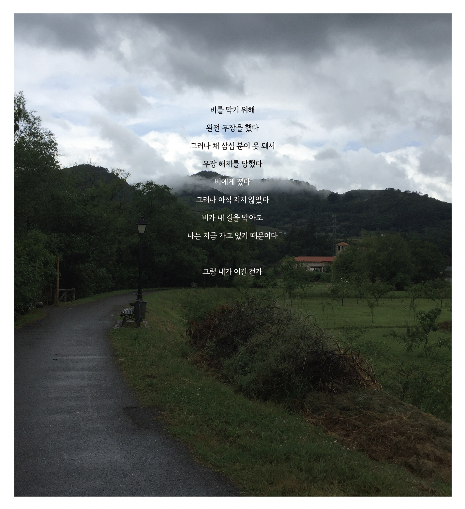
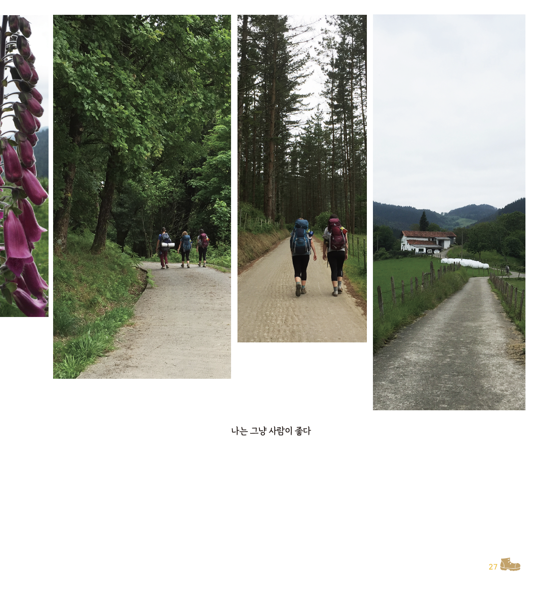
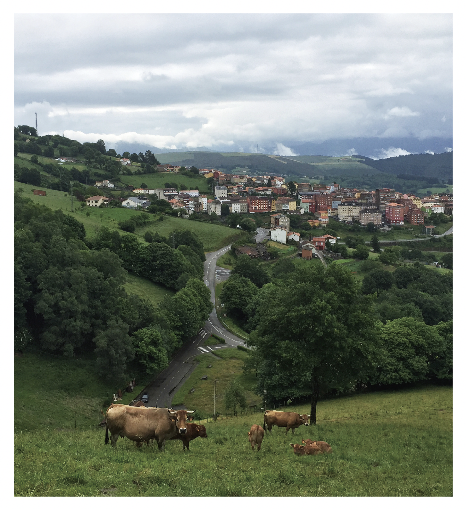
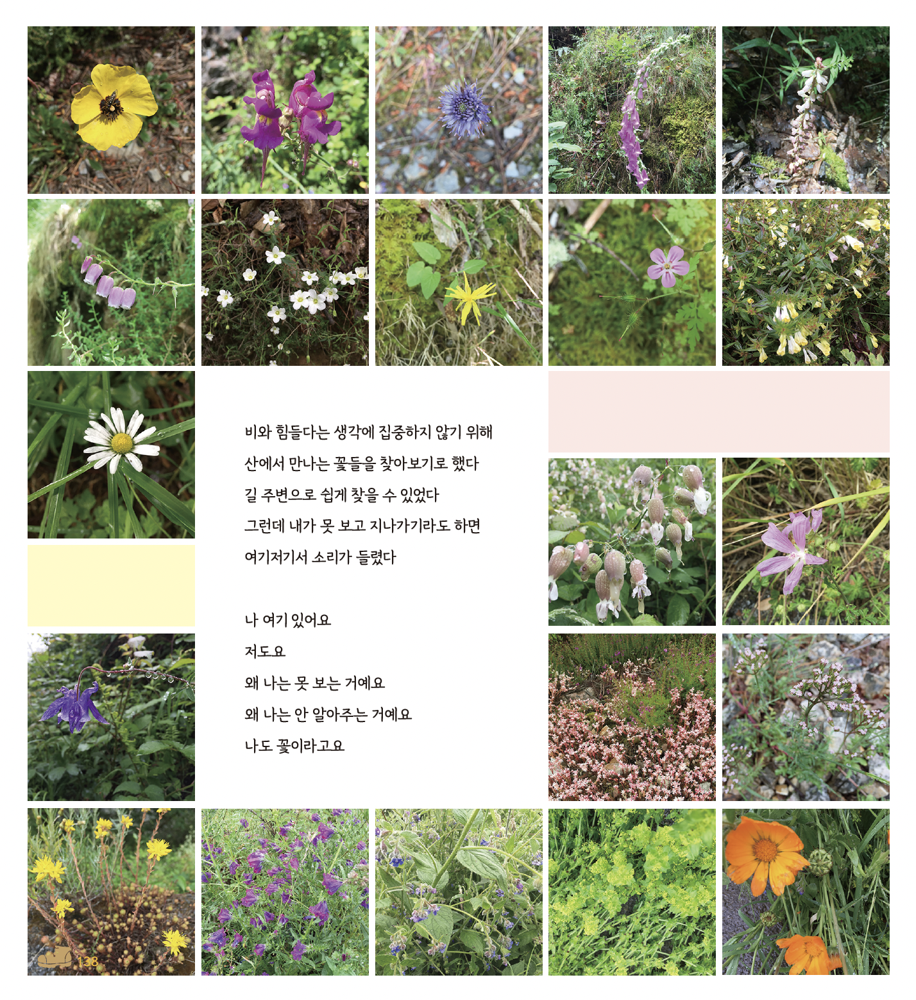
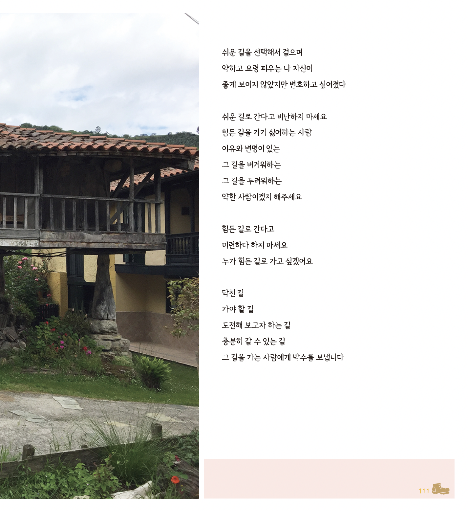
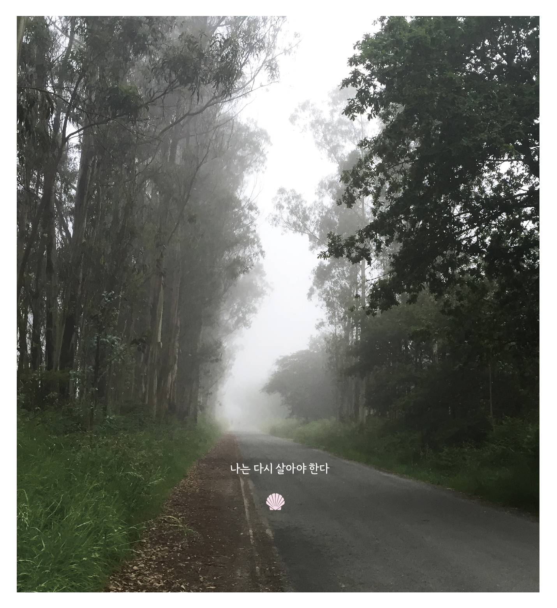

01 · THE NORTHERN WAY
26일, 약 900km의
산티아고 북쪽 길
『나는 다시 살아야 한다』는 가장 널리 알려진 생장길보다 북쪽의 해안과 산지를 따라 이어지는 산티아고 북쪽 길의 여정을 담은 사진 에세이입니다.
프랑스 바욘에서 시작해 스페인 북부를 지나 산티아고 데 콤포스텔라까지. 저자는 26일 동안 약 900km를 걸으며 그날의 풍경과 그 순간 마음에 떠오른 문장을 기록했습니다.

비가 길을 막아도, 나는 지금 가고 있기 때문이다
02 · PHOTOGRAPHS
사진으로 따라 걷는
북쪽 길의 시간
책에는 바다와 산, 오래된 마을과 성당, 비와 안개가 머문 길, 하루의 시작과 끝을 함께한 숙소, 길 위에서 스쳐 간 사람과 작은 생명들의 사진이 풍부하게 실려 있습니다.
사진은 글을 설명하기 위한 장식에 머물지 않습니다. 하루하루의 거리를 따라 이어지며 말로는 모두 옮길 수 없는 순례의 시간과 공기, 잠시 멈추어 바라본 순간을 전합니다.

나는 그냥 사람이 좋다

산과 마을을 따라 이어지는 길
03 · A GLIMPSE INSIDE
책장을 먼저,
조금만 펼쳐봅니다
서로 다른 날의 지면 세 장을 골랐습니다. 여정의 내용을 미리 설명하기보다 사진과 문장, 넓은 여백이 만들어 내는 책의 호흡을 먼저 만나보세요.



이 책에는 이처럼 사진과 글이 서로를 설명하지 않고 나란히 머무는 장면이 이어집니다.
04 · SENTENCES
고통과 풍경 사이,
담백한 문장의 힘
그 풍경 사이에는 길을 걸으며 기록한 저자의 문장이 놓여 있습니다. 화려하게 꾸미거나 의미를 쉽게 설명하지 않는 짧고 담백한 문장입니다.
고통과 풍경이 한 페이지 안에서 조용히 포개질 때, 단순한 문장은 오히려 더 오래 머무는 울림을 만듭니다. 책은 무엇을 느껴야 하는지 정해 주지 않고 독자가 자신의 경험과 마음으로 그 여백을 채우게 합니다.
05 · QUESTIONS
길 위에서 만난 질문
나는 어디를 향해 가고 있는가.
끝까지 걷는다는 것은 무엇인가.
멈추거나 돌아서는 것은 실패일까.
다시 살아간다는 것은 어떤 의미일까.
책은 이 질문들에 하나의 답을 제시하지 않습니다. 사진과 글을 따라 걷는 동안 독자가 자신의 기억과 질문을 마주할 수 있도록 조용히 자리를 내어 줍니다.
06 · THE RHYTHM OF DAYS
하루가 지나고,
또 한 장이 이어집니다
어떤 날은 바다가, 어떤 날은 숲과 안개가, 또 어떤 날은 낯선 사람의 작은 친절이 곁에 놓입니다. 매일의 기록은 하나의 결론으로 서두르지 않고 다음 장을 향해 천천히 이어집니다.
0107132026
마지막 날에 이르렀을 때, 처음의 질문은 어떤 문장으로 남게 될까요.
07 · THE LAST SENTENCE
순례의 끝에 남은 문장
순례의 끝에서 모든 것이 희망으로 바뀌거나 모든 질문이 해결되는 것은 아닐지도 모릅니다. 그 말이 희망인지, 다짐인지, 사명인지 혹은 또 다른 질문인지는 독자의 몫으로 남겨집니다.
“하지만 나는 다시 살아야 한다.”
이 책은 아픔을 해결하는 방법을 말하기보다, 때로는 서로의 아픔을 바라보고 나누는 것만으로도 위안이 될 수 있음을 전합니다.
08 · BOOK INFORMATION
도서 정보
- 제목
- 나는 다시 살아야 한다
- 지은이
- 이숙진
- 사진
- 이숙진
- 편집·디자인
- 이정애
- 분류
- 산티아고 북쪽 길 순례 사진 에세이
- 펴낸곳
- 인투뎀 북스
- 판매
- 예약 판매 중 · 18,000원
카카오톡으로 예약하기 ↗